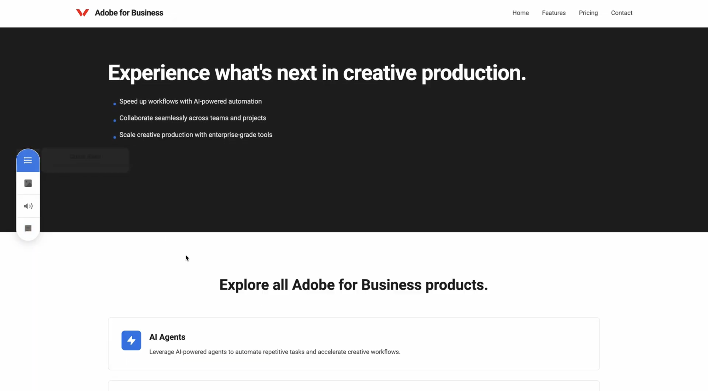
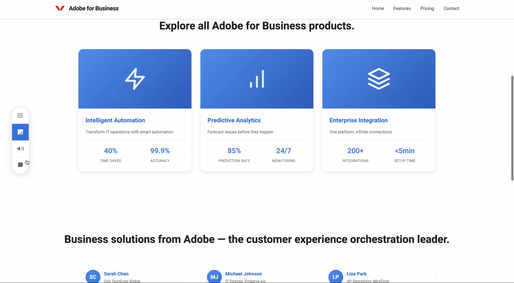
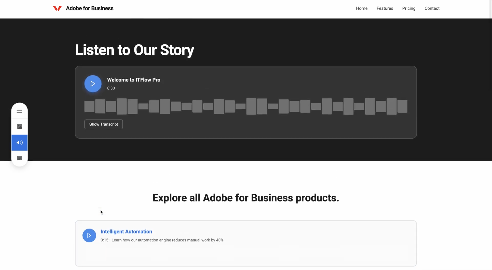

Demo Screenshots
Same page. Four experiences.
One marketing page — instantly transformed by LLM into four distinct reading experiences. The widget sits on top; the content underneath adapts on demand.
📄 Verbose

Full context, every detail. For buyers who need to understand everything before deciding.
⚡ Quick Read

Key points, crisp bullets. For the 30-second skimmer who wants signal, not noise.
🎨 Visual

Icons, stats, spatial layout. For visual thinkers who process information as images, not text.
🎧 Audio

Narrated and ready to play. For commuters and multitaskers who listen while they move.